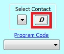

- Inline Validation
EME version 4.0 was developed to show the minimum required elements needed to pass ISO schema validation, EDG validation, and Data.gov's DCAT validation. All required elements can be identified with an exclamation point next to the element name . The EDG website will provide the final validation. Note: Users can save metadata records with errors (missing required elements) and edit the record at a later time; however, metadata records with errors will most likely not pass EDG validation when attempting to publish.
- Ordinality
The distinction between 'mandatory', 'mandatory if applicable', and 'optional' fields as required by Data.gov's Project Open Data/DCAT metadata standard is provided through the use of color-coding in the user interface. Yellow fields are considered 'mandatory', green fields are considered 'mandatory if applicable', and blue fields are considered 'optional'. Defaults for individual fields may be selected interactively in the user interface using buttons or drop-downs.
- The 'D' or 'default' button
The 'D' or 'default' button is located throughout the EME user interface and when clicked, automatically populates the default values stored in the EPA Metadata Editor template XML files.

- Manual Value Override
Once a record has been populated either by choosing the 'D' button or selecting a Contact using the drop-down list, users can manually override the field values by simply clicking in any field and deleting the existing text or modifying the existing text.
- Multiple Values
Many sections in ISO Metadata can be repeated if necessary to allow for multiple values. Contact information is the most common example. If a section may be repeated, you will see a plus and x icon. Clicking the plus icon adds new sections, while the x deletes the current section. Next to these icons are two arrows enclosing a pair of numbers - the first number is the index of the currently shown section, while the second is the total number of sections. In the example below, the first out of three Resource Owners is selected. The arrows may be used to cycle through the individual sections.
- Minimized Sections
Many sections in the interface have been minimzed to save space. This icon indicates that a section has been minimized. Clicking on the icon will expand the section for editing.